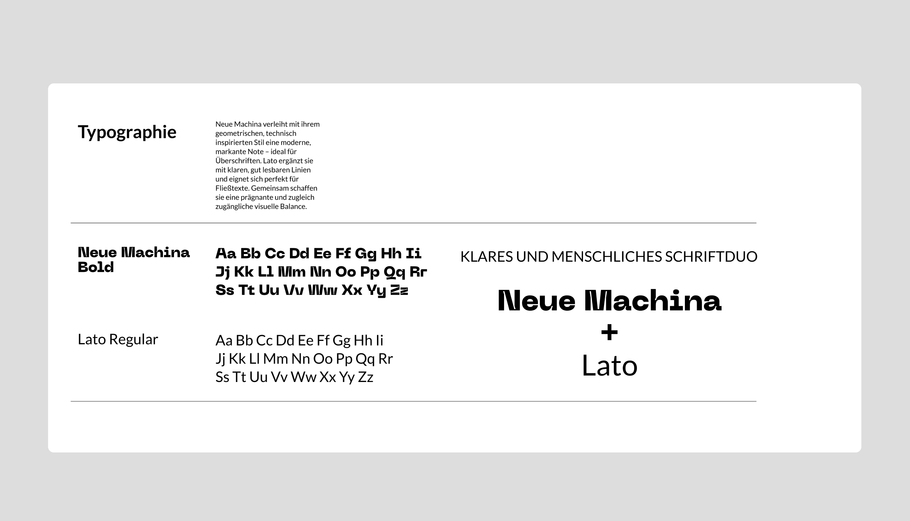

SiUSpace verbessert die Sicherheit im Drohnenbetrieb, indem externe Gefahren wie Wetter, unkooperative Flugobjekte oder Bodenereignisse frühzeitig erkannt und bewertet werden. Dafür nutzt das Projekt Daten aus verschiedensten Quellen und setzt KI ein, um automatisch Handlungsempfehlungen zu erstellen. Ein Laborsystem demonstriert die Funktionen, ergänzt durch Kommunikations- und Schulungskonzepte.
Meine Rolle im Projekt umfasste die Konzeption und Gestaltung der Website sowie die Programmierung und Umsetzung mit dem CMS WordPress.


https://www.siuspace.com/